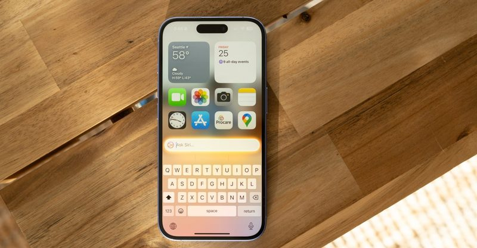
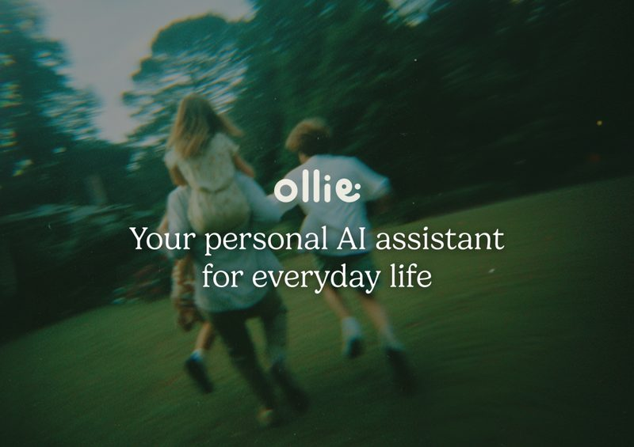
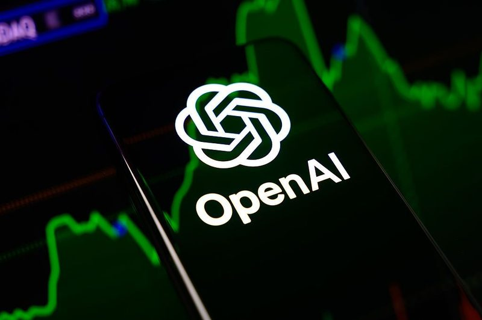

今日頭條
Apple Intelligence 將登陸中國
PLUS：隱私型 AI 助理 Ollie 一週後關閉
本期重點：Apple 的 AI 功能終於要進中國市場，小型 AI 助理新創撐不下去；另外 AI 搶記憶體讓電子產品變貴，OpenAI 募資也不如預期。

圖：The Verge／Allison Johnson新上線#1Apple Intelligence 將在中國上線，先從 iOS 27.3 測試版開始
Apple 在中國官網宣布，Apple Intelligence 會隨 iOS 27.3 登陸中國：測試版預計 11 月 4 日推出，正式版排在 12 月。這次開放的是通知摘要、即時翻譯、改寫與校對、視覺智慧、照片移除物件等較早期的功能，新版 Siri AI 不在其中；Apple 也表示和阿里巴巴合作，在部分情境整合 Qwen 聊天機器人。
💡 跟你有什麼關係：Apple 的 AI 功能是依地區與語言分批開放，這次進中國代表中文版功能持續擴大。若你有親友使用中國版 iPhone，年底前後就能用到摘要、翻譯等功能。
⚠️ 報導未提到台灣或其他地區的開放安排；中國版與阿里巴巴 Qwen 的整合細節仍待正式上線確認。
📰 原始來源：The Verge（2026-10-30） ↗
圖：TechCrunch／Ollie新聞#2主打隱私的 AI 助理 Ollie 宣布 11 月 6 日關閉
AI 助理新創 Ollie 的共同創辦人暨執行長 Bill Lennon 10 月 30 日（美國時間）在 X 上宣布，App 將在 11 月 6 日正式關閉。Ollie 9 月才公開 750 萬美元種子輪，主打幫家庭整理行程，可連接電子郵件與行事曆、協助預約、規劃餐點與付帳單，也是少數取得 SOC 2 資安稽核的消費型 App。
💡 跟你有什麼關係：這類 AI 助理常會接上你的信箱和日曆，服務一收掉，資料去向和退費就很重要。Ollie 表示用戶幾天內會收到匯出資料與退款的說明。
⚠️ Lennon 說競爭者大量湧入，讓公司難以成長和募資；其他同類 App 的經營狀況不在本則範圍內。
📰 原始來源：TechCrunch（2026-10-30） ↗圖：The Verge／Justin Sullivan／Getty Images觀點#3Sam Altman：記憶體放在資料中心，比放在你桌上好
OpenAI 執行長 Sam Altman 在 Cheeky Pint Podcast 談到全球記憶體（DRAM）短缺時表示，從全球分配的角度來看，讓每個人電腦裡放一堆只用到約 5% 時間的記憶體「相當糟糕」，在供應吃緊時應該集中到雲端提高使用率。The Verge 指出，Samsung、SK Hynix 已和雲端業者及 OpenAI 的 Stargate 等計畫簽下長約，預留未來幾年大量產能。
💡 跟你有什麼關係：AI 公司大買記憶體，是筆電、手機等產品最近變貴的原因之一。想買新電腦或升級記憶體的人，可以預期價格短期內不容易回落。
⚠️ 這是 Altman 的個人觀點；記憶體價格走勢仍受許多因素影響。
📰 原始來源：The Verge（2026-10-30） ↗圖：The Verge／Jeffrey Greenberg／Getty Images新上線#4星巴克想用 AI 在得來速「認出你」，顯示專屬菜單
星巴克執行長 Brian Niccol 在 10 月 29 日（美國時間）的財報電話會議上說，公司將探索在顧客抵達時辨識參與的會員、顯示個人化數位菜單並簡化付款。2027 年起也會在得來速測試背景 AI 模型，協助店員更準確輸入點單，App 的搜尋功能也會加入 AI，未來可能開放對話式、代理式點餐。
💡 跟你有什麼關係：Taco Bell、McDonald's 也在試類似做法，速食與咖啡店的點餐畫面之後可能因人而異。這也牽涉到店家會記錄多少你的消費習慣。
⚠️ Niccol 表示還在「早期」，沒有公布上線時程，也沒提到美國以外的市場。
📰 原始來源：The Verge（2026-10-30） ↗
圖：TechCrunch資金#5OpenAI 新一輪募資目標傳下修到 200 億美元
金融時報（FT）10 月 30 日報導，OpenAI 先前傳出要以 1.25 兆美元估值募 300 億美元，現已把目標降到 200 億美元，首輪交割金額還會更低，主要由阿聯投資人領投。華爾街日報補充，目前已到位 110 億美元，部分大型投資人反應「冷淡」。
💡 跟你有什麼關係：這反映投資人開始擔心 AI 基礎建設花費過高，科技股近期也出現賣壓。AI 公司資金是否吃緊，會影響之後的免費方案與訂閱價格。
⚠️ 以上為媒體引述消息，TechCrunch 撰稿時 OpenAI 尚未回應。
📰 原始來源：TechCrunch（2026-10-31） ↗圖：TechCrunch／Brandon Dill for The Washington Post／Getty Images政策#6xAI 資料中心汙染官司，法官駁回撤案請求
美國聯邦法官 Debra M. Brown 10 月 31 日（美國時間）駁回 xAI 撤銷訴訟的請求，讓美國有色人種協進會（NAACP）的官司繼續進行。原告指控 xAI 在孟菲斯附近的 Colossus 資料中心，未取得空汙許可就裝設並運轉至少 35 具燃氣渦輪機，違反《清潔空氣法》；xAI 主張渦輪機屬可移動設備而免許可，法官不採納。
💡 跟你有什麼關係：AI 資料中心很耗電，常靠自建發電設備，周邊居民的空氣和用電成本因此成為爭議。美國各地反資料中心的聲浪也在升高，紐約州已通過新資料中心暫停令。
⚠️ 這只是程序上的裁定，案件本身尚未判決；TechCrunch 撰稿時 SpaceX 未回應。
📰 原始來源：TechCrunch（2026-10-31） ↗圖：The Verge／Ernesto Ruscio／Getty Images政策#7教宗良十四世呼籲禁止致命自主武器：「機器是工具，不是人」
教宗良十四世 10 月 30 日發表談話，呼籲聯合國會員國在下個月日內瓦會議上「採取具體步驟，禁止致命自主武器」。他表示 AI 應該被「解除武裝」，影響人命、自由與使用武力的決定都必須由人類有效監督，並警告不應賦予 AI 權利或法律人格。
💡 跟你有什麼關係：AI 該不該自己決定開火，是各國正在談的國際規範議題。教宗也呼籲建立共同標準、獨立監督與問責機制，讓 AI 造成的傷害有地方申訴。
⚠️ 教宗談話沒有法律效力，是否形成國際條約要看各國協商結果。
📰 原始來源：The Verge（2026-10-30） ↗✅ 2026/11/1（日） 可以做：如果你有在用小型新創的 AI App，記得定期把資料匯出備份，萬一服務收掉才不會措手不及。
🗂️ 過去 14 天